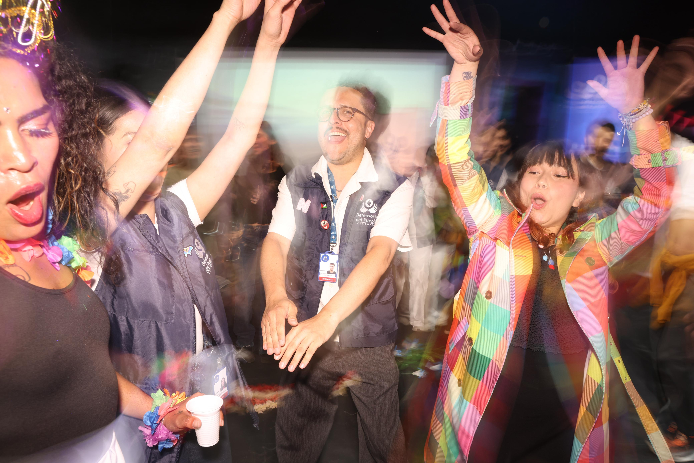

Si la música no empieza automáticamente, presiona reproducir.
Fuimos a celebrar la diversidad y rumbié hasta abajo con las personas privadas de la libertad.
Un PPL ese día me dijo "gracias porque hace 4 años no la pasaba así de rico y nos trataban con dignidad". Porque una vez entras a la cárcel pareciera que ya no eres un humano. Eres el criminal, la escoria o el enemigo que debe ser eliminado.
Pero no estamos haciendo las preguntas importantes. ¿No les parece raro que la mayoría de las personas privadas de la libertad vengan de estratos 1 y 2? ¿Por qué al feminicida le decimos "loco", en lugar de preguntarnos qué estructura sostiene el feminicidio? ¿Dónde queda el poder en todo esto? ¿Y nuestra crianza, esa que desde pequeños nos enseña que "si te molesta, es porque le gustas", incluso cuando ya le has dicho que pare una y otra vez?
Toda esta carreta para decir que el punitivismo no se construye solo desde el Estado. También se construye desde los afectos.
Se construye cada vez que decidimos que alguien ya no cabe en nuestra vida solo porque se equivocó y nuestra torpeza emocional no nos deja ir más allá ni sentarnos a dialogar con el problema.
Yo sí creo que el punitivismo lo construimos entre todos. Cuando dejamos de hablarnos, cuando decidimos que a unos les damos el saludo, el afecto, el abrazo y a otros no (sobre todo cuando ese sesgo pasa por el estrato), cuando decidimos que unas voces valen más que otras y de paso, que unas vidas valen más que otras.
Y es ahí, en esa negativa a mirar la diferencia de frente, donde terminamos haciendo políticas públicas que borran al otro.
Eso sí, no me malentiendas, no te estoy haciendo un análisis de la política retributiva y sus efectos. Te hablo desde el sentir, con la esperanza (mucha) de que te preguntes de dónde sale esa idea tan arraigada de que la única salida es la cárcel.
Un abrazo,
Lau.
